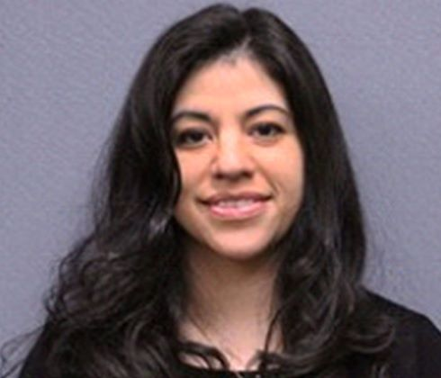

Friday, September 26th
| 12:00-4:00 (Must pre-register) | Preconference speaker | Main Office |
|---|---|---|
| 3:30-4:30 | Registration | Gym |
| 4:30-4:45 | Welcome | Gym |
| 4:45 - 6:15 | Keynote Speaker- Anna Stukes - Maximize Learning Potential: Engage Each Student | Gym |
| 6:15 – 9:00 | Dinner | Birch Area |
Saturday, September 27th
| 8:30-8:45 | Coffee and Registration | Gym |
|---|---|---|
| 8:45 – 10:00 | Keynote Speaker- Anna Stukes - Elevating Classroom Dialogue | Gym |
| 10:05 – 11:15 | Break Out Session 1 | Classrooms |
| 11:15 – 12:45 | Lunch | Birch Area |
| 12:50 – 1:00 | Break Out Session 2 | Classrooms |
| 1:15 – 3:00 | Job-a-likes | Classrooms |
| 3:05 – 3:30 | Closing Remarks | Gym |
Job-a-likes
- Administration– Main office
- Counselors- Room 109
- Science – Room 106
- Math – Room 108
- Cultural Studies – Room 110
- Literature and Writing – Room 103
- Elementary Homeroom- Room 120
- Languages Other Than English- Room 115
- Physical Education- Gym
- Athletic Directors Meeting- Library
- Art / Music– Room 134
- Technology - Library
- ESL (Intensive English)- Room 117
Workshop Objectives:
- Understand the principles of equitable and inclusive teaching.
- Apply strategies to differentiate instruction based on student needs.
- Use data and student feedback to inform and adapt teaching practices.
- Foster a classroom culture that supports engagement and belonging.
- Equity in Action
- Differentiation Deep Dive
- Data-Informed Teaching
- Inclusive Classroom Culture
- Tech Tools for Engagement
- Collaborative Planning
- Reflection & Action Planning
Keynote Speakers
Anna Stukes
With 15 years of dedicated experience, Anna Stukes is a passionate advocate for English Language Learners (ELLs) and Bilingual Education.
Her career spans diverse roles, including teacher, teacher mentor, and Instructional Coach, alongside significant leadership as a New York State Seal of Biliteracy (NYSSB) Regional Liaison, Equity Team Member, and Professional Development Specialist for NYSED (New York State Education Department).
She has done extensive work with educators and families of English Language Learners in language and literacy development to ensure access to an equitable education.
As the Puerto Rican/Hispanic Youth Leadership Institute (PR/HYLI) Regional Coordinator, she provides youth with a platform to develop transferable and sophisticated language skills and leadership experiences.
Beyond her professional life, Anna serves on the Board of Directors for The Last Shall Be First Scholarships, Inc., a foundation dedicated to providing postsecondary scholarships to those living in extreme poverty and orphan students in Peru, S.A.
As a wife and busy mom of three, you can find her coaching basketball and supporting her children’s academic journeys.
Anna is bilingual, bicultural, and biliterate and holds Masters Degrees in Teaching English to Speakers of Other Languages, Teaching Spanish, and Urban Teaching and Leadership, complementing her Bachelor’s degrees in Communication Studies, Spanish Language and Literature, and International Studies. Most recently, she began a PhD Fellowship in Language Education & Multilingualism at the University at Buffalo.
Talley Lyn Sjoberg-Varney

Talley Sjoberg-Varney is an accomplished Emotional Health Counselor and Subject Matter Expert with a focus on Mental Health and Well-being. In addition to her global consultancy work with International SOS, she is the Founder of Clearly Sage Advice & Organics, LLC, a holistic health practice committed to delivering comprehensive wellness solutions.
Talley’s services include clinical consultations, private coaching, Mindfulness-Based Stress Reduction (MBSR) sessions, plus the design and delivery of mental health and well-being webinars and workshops, which cater to diverse sectors such as diplomacy, corporate environments, and education. With a background as a licensed social worker and counselor since 2001, Talley’s approach is rooted in improving overall well-being through holistic care.
Throughout her career, Talley has built an extensive global portfolio. As a semi-nomadic professional, she has spent over 19 years working across six countries, providing client-centered mental health solutions worldwide. Originally from the United States, Talley dedicated seven years to serving as a counselor and social worker for Exceptional Student Services on the Navajo Nation in Arizona, where she was honored with the Indian Health Service Commitment to Children Award.
Prior to her work with the Navajo Nation, Talley gained invaluable experience in refugee health and education. She has lived and worked in the United States, Thailand, Georgia, China, and Slovakia, taking on myriad roles including IB psychology educator, school administrator, Early Childhood Center director, and counselor.
As an IB psychology educator, Talley was consistently selected as the student-elected commencement speaker, delivering powerful messages of positivity, forgiveness, and determination that resonated deeply with students and faculty alike. Currently residing in Almaty, Kazakhstan, with her husband and two children, Talley continues to make a profound impact on her community and the global mental health landscape.
Talley holds a social work license from Michigan, a US teaching license, and certifications as a life coach, employee coach, and management coach. She is further certified in Solution-Focused Therapy and as a Developmental Screener in California. As also a registered clinical aromatherapist, she serves as the Central Asia Director for the National Association of Holistic Aromatherapy (NAHA) and regularly contributes to educational and homeopathic journals.
Talley’s academic credentials include dual Bachelor of Science degrees in Early Childhood Education from Gannon University and a Master of Social Work from the University of Minnesota. She is also a graduate of the Mindfulness-Based Stress Reduction program at Brown University and a certified Heartfulness instructor through Heartfulness Denmark. Talley has completed an MBSR program at Harvard Teaching Hospital and is currently pursuing a PhD in Philosophy and Psychoanalysis.